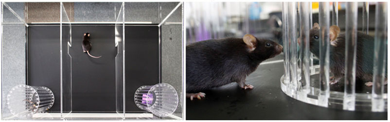
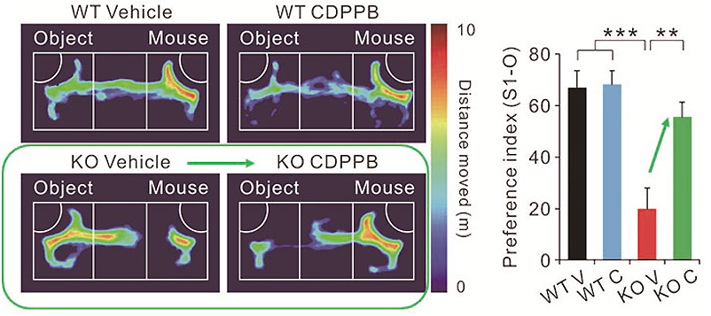

Report by Subjects
Report by Subjects
KAIST RESEARCH ACHIEVEMENTS
Identification of an Autism Gene and Underlying Mechanisms
Department of Biological Sciences Eunjoon Kim
Summary
In 2028, Mr. John Smith is admitted to the hospital for the symptoms of autism. Through genetic and electrophysiological analysis, Shank2, a key scaffold protein at excitatory synapses is found to be defective, resulting in reduction of excitatory synaptic activity in John's brain. Medication that restored the excitatory synaptic activity, alleviated John's symptoms, allowing Mr. Smith to enjoy a normal quality of life.
R&D Report

These results suggest that reduced NMDAR function may contribute to the development of ASD-like phenotypes in Shank2-/- mice, and mGluR modulation of NMDARs offers a potential strategy to treat ASD.
Autism spectrum disorder (ASD) is a group of conditions characterized by impaired social interaction and communication, and restricted and repetitive behaviors. ASD is a highly heritable disorder involving various genetic determinants, affecting approximately 100 million people world-wide. A recent study from the University of Washington reports that one in three young adults suffering from ASD have difficulty adjusting to work or attending colleges, indicating the severity of ASD in disrupting normal life. Unfortunately, current drugs are not effective in providing fundamental treatment of ASD, merely alleviating the typical symptoms, such as repetitive behaviors.
Shank2 is a multi-domain scaffolding protein and signalling adaptor enriched at excitatory neuronal synapses, and mutations in the human SHANK2 gene have recently been associated with ASD and intellectual disability.
Shank2-mutant (Shank2-/-) mice carrying a mutation identical to the ASD-associated microdeletion in the human SHANK2 gene, exhibit ASD-like behaviours including reduced social interaction, reduced social communication by ultrasonic vocalizations, and repetitive jumping. These mice show a marked decrease in the NMDA (N-methyl-D-aspartate) glutamate receptor (NMDAR) function. Direct stimulation of NMDARs with D-cycloserine, a partial agonist of NMDARs, normalizes NMDAR function and improves social interaction in Shank2-/- mice. Furthermore, treatment of Shank2-/- mice with a positive allosteric modulator of metabotropic glutamate receptor 5 (mGluR5), which enhances NMDAR function via mGluR5 activation, also normalizes NMDAR function and markedly enhances social interaction.
3-Chambered Social Test
Shortly after a period of habituation a mouse's sociability is determined by evaluating the amount of time the test mouse spends approaching a wire cage containing an unfamiliar 'stranger' mouse, which is compared to the time spent with the cage containing an object.

Restoration of sociality by drug treatment
Shank2-/- mice treated with CDPPB, which enhanced NMDAR function via mGluR5 activation, show substantially improved social interaction in three-chamber assays.

Research Funding
The research was supported by National Creative Research Initiative Center for Synaptogenesis funded by the Korean Government (the Ministry of Education, Science and Technology) (No. 2003- 0046433).
Research Results
Autistic-like social behavior in Shank2-mutant mice improved by restoring NMDA receptor function. Nature. 486:261-265.